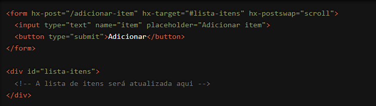

O HTMX oferece uma série de atributos poderosos para controlar o comportamento das requisições e das respostas AJAX. Um desses atributos é o `hx-postswap`, que permite definir ações específicas a serem tomadas após a substituição do conteúdo do DOM. Vamos explorar como essa funcionalidade pode ser utilizada para criar interações mais refinadas em suas aplicações web.
O que é o atributo `hx-postswap`?
O `hx-postswap` é um atributo do HTMX que permite especificar um ou mais comportamentos
a serem executados após a substituição do conteúdo do DOM com a resposta AJAX. Isso pode
incluir ações como foco em um elemento, rolar a página até um ponto específico, ou até
mesmo executar um código JavaScript personalizado.
Como Funciona?
Vamos ver um exemplo prático para entender melhor como o `hx-postswap` pode ser usado.
Suponha que você tenha um formulário que, ao ser submetido, atualiza uma lista de itens e
você deseja que a página role automaticamente até o topo da lista atualizada.

Neste exemplo, o formulário envia uma requisição POST para `/adicionar-item`, e a resposta substitui o conteúdo do elemento `#lista-itens`. Após a substituição, o comportamento `scroll` definido por `hx-postswap` faz com que a página role automaticamente até o topo da lista atualizada.